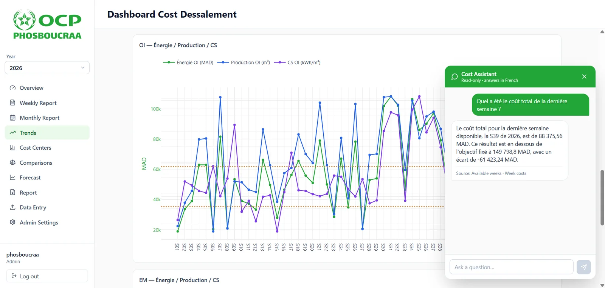

Engineering Intern (PFA)
OCP Phosboucraa — OCP Group

Built a cost-forecasting layer for the seawater reverse-osmosis desalination unit at OCP Phosboucraa. The site's dashboard only reported a week's operating costs after the fact; I rebuilt it and added a predictive layer that estimates the coming week's cost along with its uncertainty.
Engineered a weekly dataset from raw SCADA exports and focused the modelling on the specific energy consumption of the main stream, the dominant cost item. A leave-one-out Ridge regression served as a diagnostic, a hierarchical Bayesian model in PyMC gives the predictive distribution, and a Monte Carlo simulation combines all seven cost categories into a distribution of the total weekly cost.
Added a conversational assistant that answers questions about past costs and forecasts in plain language, using LLM tool calling over the dashboard's own data, with a local Ollama model as a drop-in option for confidentiality.
Tech stack
- Frontend
 ReactCost dashboard
ReactCost dashboard ViteBuild tooling
ViteBuild tooling- Backend
 FastAPIREST API, forecasts
FastAPIREST API, forecasts PostgreSQLCosts and forecasts
PostgreSQLCosts and forecasts- Modelling
 pandasSCADA features
pandasSCADA features scikit-learnRidge, LOO
scikit-learnRidge, LOO PyMCBayesian model
PyMCBayesian model- Assistant
 GeminiTool calling
GeminiTool calling OllamaLocal model option
OllamaLocal model option